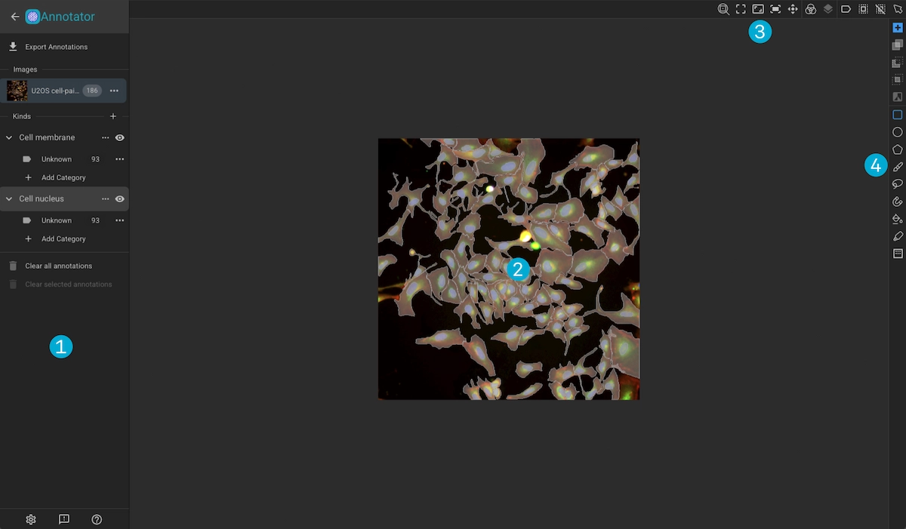
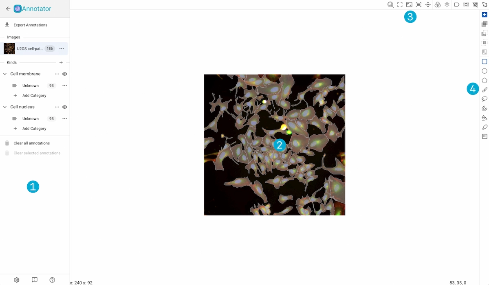
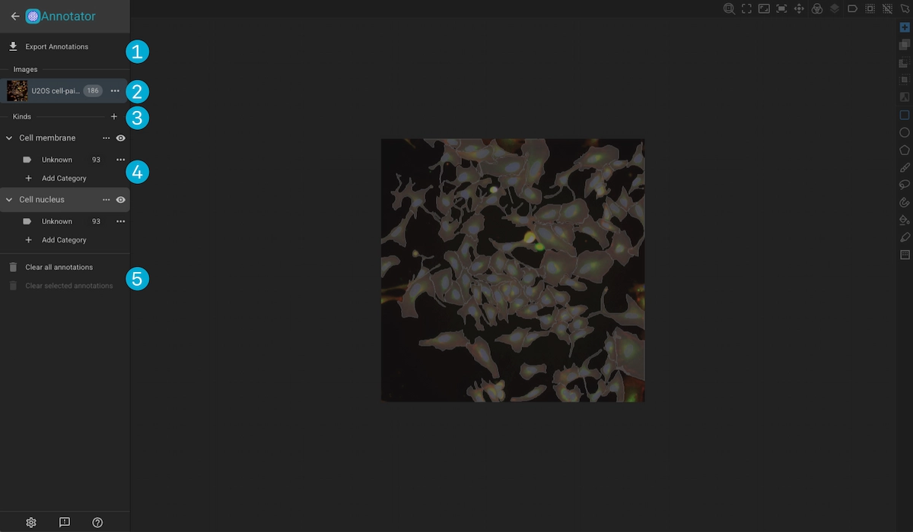
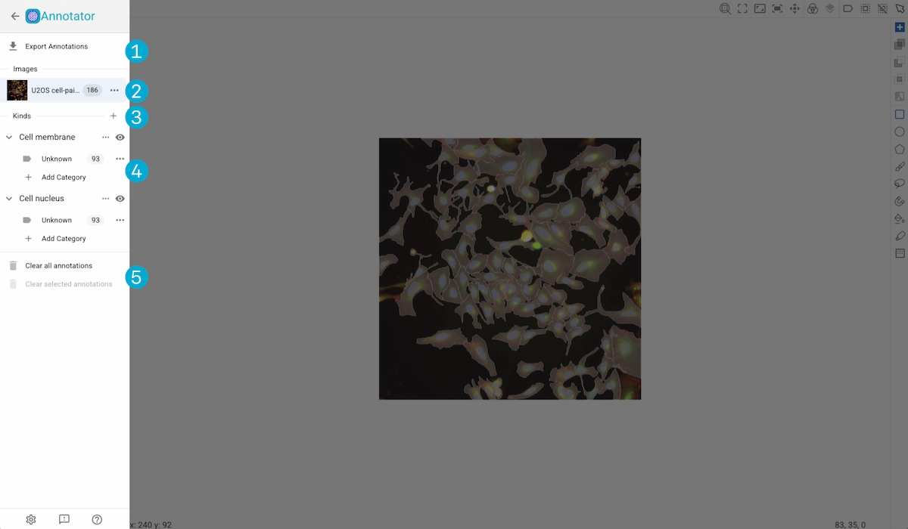
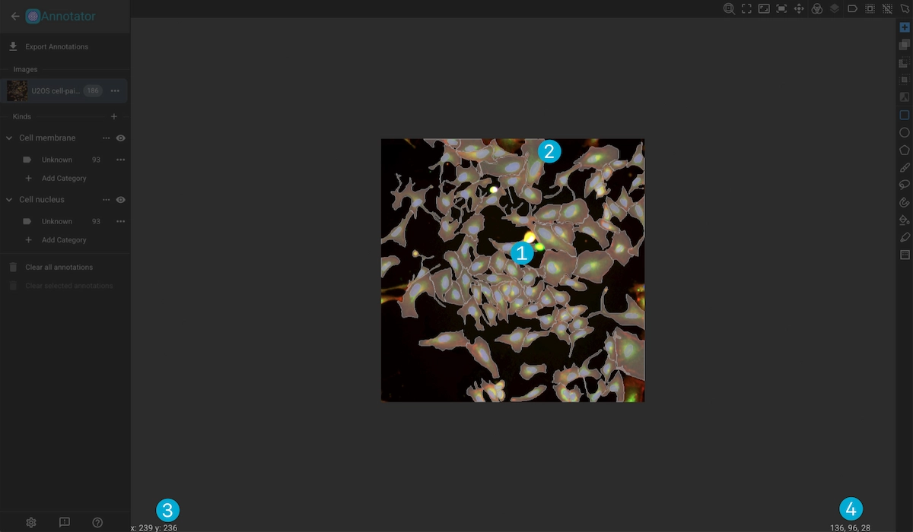
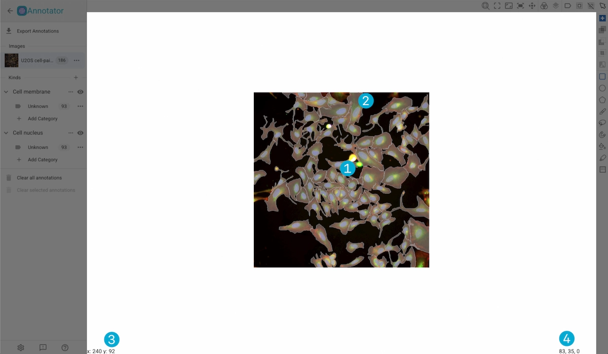
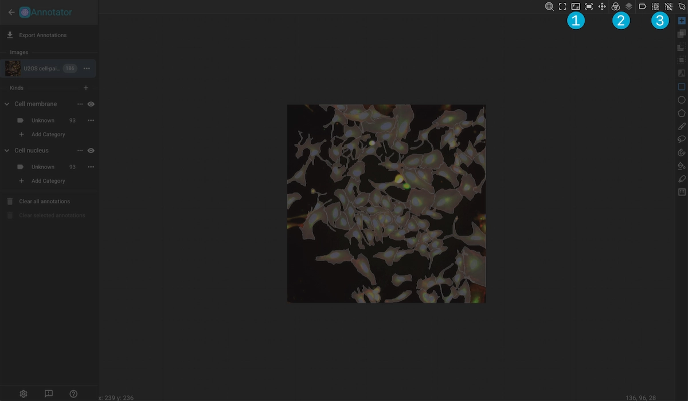
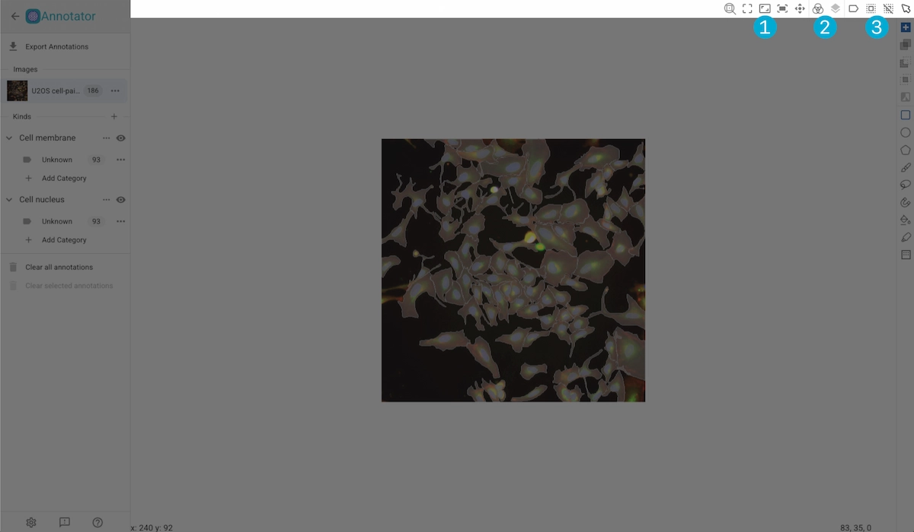
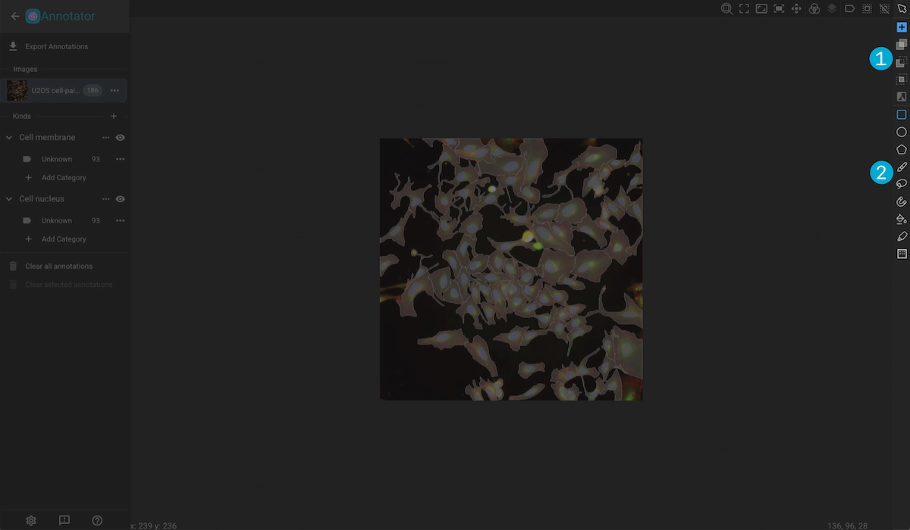
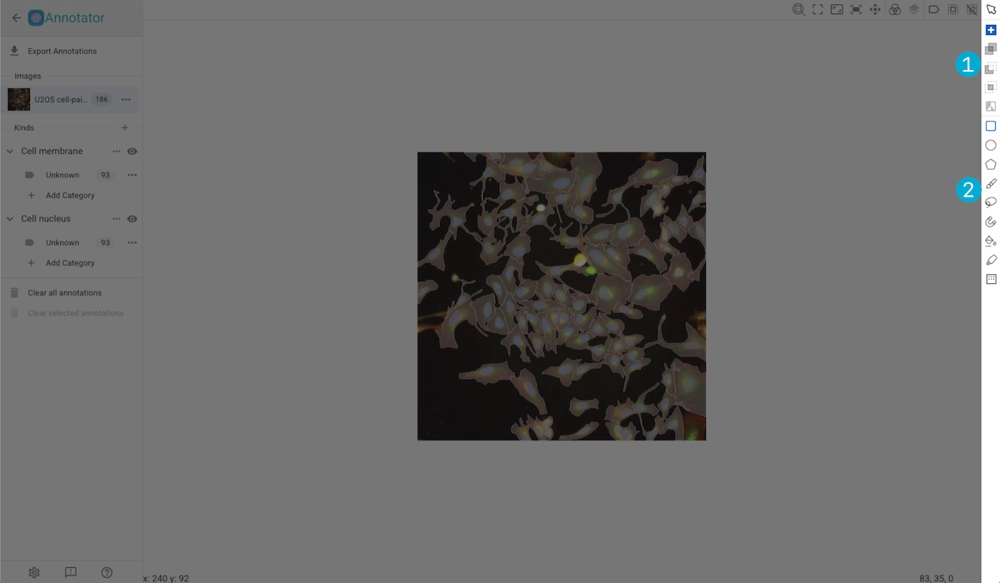

Image Viewer#
The annotator in Piximi can quickly create annotations for your multichannel and multiplane images. Below is a showcase of some of the different annotation tools that Piximi offers.


Action Drawer
Canvas
Image Tools
Annotation Tools
Action Drawer#


1. Export Annotations
Export the annotation masks for each of the images in the Image Viewer.
Masks can be exportted in a variety of formats:
Piximi-Formatted JSON (Annotations exportted in this format can be imported back into Piximi.)
COCO-Formatted JSON
Instance Masks (Labeled or Binary)
Semantic Masks (Labeled or Binary)
Label MAtrices
The mask images will be exported in the .tiff file format.
2. Image List
The images viewable in the canvas are listed here. You can export or clear annotations foar a particular image by selecting the associated menu icon.
3. Create a New Kind
Click the + button to create a new Kind in the project. Existing Kinds are listed here and expanding them reveals the associated categories. Click on the menu button to edit or delete the associated Kind, or clear the associated annotation. You can hide the associated annotations by clicking the “eye” button.
4. Category List
Contains the per-Kind categories in the project. Here you can create new categories, hide annotations of a specific category by clicking the lag to the left of it’s name, and clear associated annotations from the category’s menu.
5. Clear Annotations
Clear all or selected annotations
Canvas#


1. Image
The image selected in the image list can be viewed here. You can scroll to zoom, and click and drag while holding down alt/option to pan.
2. Annotations
Created annotations are overlayed over the image with a color corresponding to its category.
3. Cursor Coords
Displays the coordinated of the cursor respective to the image.
4. Pixel Color
Displays the color of the pixel at the current cursor position.
Image Tools#


1. Zoom Tools
Toggle Zoom Center: Configure scroll zooming to zoom to the center of the image or to the cursor position
Zoom to Region: Zoom to a selected region of the image.
Actual Size: Reset the image to its original size.
Zoom-to-Fit: Adjust the image so that it fits the canvas.
Center: Reset the position of the image.
2. Channel and Plane Adjustment
Channel Adjustment: Toggle channels on or off, adjust the min and max values, and change the color mapping. Clicking “Apply All” will apply the changes to all images in the Image Viewer.
Plane Adjustment: When viewing a 3D image, use this to change the visibly plane in the canvas.
3. Annotation Selection
Click on the selection tool to select annotations. Holding shift while selecting, or clicking then dragging, will select multiple annotations.
Annotation Tools#


1. Augmentation Type
New: This augmentation creates a new annotation.
Combine: With this augmentation selected, any annotation being drawn will be merged with another currently selected annotation.
Subtract: With this augmentation selected, any annotation being srawn will be subtracted from another currently selected annotation.
Intersection: With this augmentation selected, a currently selected annotation will be modified to be the intersection of itself and a newly drawn annotation.
Invert: Inverts the currently selected annotation.
2. Creation Tools
Rectangular Tool: Click and drag, or click twice to create a rectangular annotation.
Ellipctical Tool: Click and drag, or click twice to create an elliptical annotation.
Polygonal Tool: Click at point where you want a vertex of the polygon, then click on or near the initial vertex to complete the annotation.
Pen Tool: Free draw an annnotation. Open the slider to select the pen size.
Lasso Tool: Click and drag to create a boundary for the annotation.
Magnetic Tool: The magnetic tool tries to find edges of objects to help speed up the annotating process.
Fill Tool: Click and drag from the center of an object to create an annotation over it.
Quick Annotation Tool: Attempts to predict annotations near the cursor. Use the slider to adjust the sensitivity of this tool.
Threshold Tool: Select a region in which to generate annotations. Use the slider to adjust the sensitivity. *Note: generated mask will be considered as a single annotation.
To see the tools in action go to the Annotation Tools section.